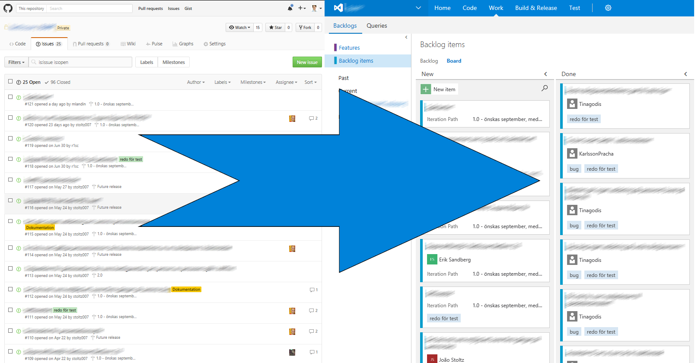

Regarding migrations, I have previous experience with migrating on premise Team Foundation Servers (TFS) to Visual Studio Team Services (VSTS). Those times I used tools such as the OpsHub Visual Studio Migration Utility for copying work items and Git TFS for migrating source code.
Yes, you are right. The OpsHub utility can migrate source code as well. But since I’m a fan of Git I thought that I could do the TFVC to Git conversion when I was about to move anyway.
But enough about TFS-to-VSTS migrations. This post is about how I was trying to figure out how to approach migrating a GitHub repository to VSTS. This time, the problem was not about source code. VSTS has full support for Git, and pushing a Git repository to another remote is trivial. Here is a random blog post (by Esteban Garcia) about the procedure.
The Problem at Hand
What I had to come up with was how to migrate Github Issues and their associated Milestones. The repository I was migrating had not done any Pull Requests, so I could disregard that type of entity completely.
When I googled around for solutions I found several attempts of using the GitHub REST API to export issues into a CSV-format. In theory, I could use used the Excel TFS plugin to import these CSV-issues into VSTS… But, none of the scripts that I found actually worked the way that I wanted. Not even close.
So, that left me with the option of doing my own solution. Luckily, that turned out to be a good thing. The result went just the way I wanted it to be.

Migrating GitHub Issues to VSTS
The grand master plan was to use the GitHub REST API to get the information I needed, and to create iterations and work items through the VSTS REST API. To summarize, milestones were to be converted into iterations, and issues into work items.
Extracting Information from GitHub
I started out by making a GET request to list all issues for the GitHub repository, but quickly found out that the result was paginated, and I only got the first 30 or so… I had to repeatedly make requests for the next page, whose URL were hiding behind a Link-header in the response. It actually took me some time to figure this out, and it was not until I finally read the documentation that I discovered it. Note to self, RTFM…
Then I noticed that most descriptions and comments where formatted in markdown. VSTS need to have its content in bare html, so I needed a way to convert the formatting somehow. Lucky me, the GitHub API has an endpoint just for that purpose!
I think its raw text/plain method is really convenient. If I ever find myself in need for markdown conversion once more, I will definitely consider to use the GitHub API again.
Creating Work Items and Iterations in VSTS
Now it was time to create some entities in VSTS, and I started with the iterations. The GitHub milestones have both title and description. Iterations just have title, so the description hade to be lost in the migration. Milestones have end date (due date, really) but lacks start date. My approach was that if a milestone had a due date set, I used the date that the milestone was created as start date for the iteration.
The hardest part was to find the name of the endpoint for iteration creation in the VSTS REST API. After some extensive research, I discovered that areas and iterations are called “classification nodes“ in REST API-language.
As I tested out creating iterations, I was reminded that some characters are not allowed in their names.
I find that these restrictions are quite interesting. I can imagine why some characters are not allowed, but there are also naming restrictions. Like for example that an iteration is not allowed to be named COM1 or AUX. How on earth could the backend software be written, if the name of an entity would risk the entity to be mixed up with some random parallel port?
Creating work items was a real breeze. One just compose a list of instructions of how the fields and states of the work item should be. The only thing that was a bit troublesome was that if I sent instructions to create several comments on a work item, only the last was actually entered. My solution to that problem was to first create the work item without comments, and then update it once for each comment that needed to be added.
A very nice feature of the endpoints for creating and updating work items is the bypassRules query parameter. It made it possible for me to both create and update work items while having the original GitHub usernames show up in their history.
Show Me Some Code Already!
The script is too long to be included in this blog post (Duh!), but here is a link to a GitHub repository of mine where you can get it, and also read more about the details of what information gets copied.
Be Weary of Gotchas
- You need to be a member of the VSTS “Project Collection Service Accounts” group to be allowed to use the bypassRules query parameter.
- I used basic authentication to login on GitHub. If you have an account with activated two factor authentication that method will not work for you.
- Only milestones that have issues relating to them are migrated. Empty milestones are not included.
Lessons learned
- Read the documentation.
- Writing custom migration logic is not as hard using REST APIs as with the (dreaded, and outdated) TFS Integration Platform toolkit.